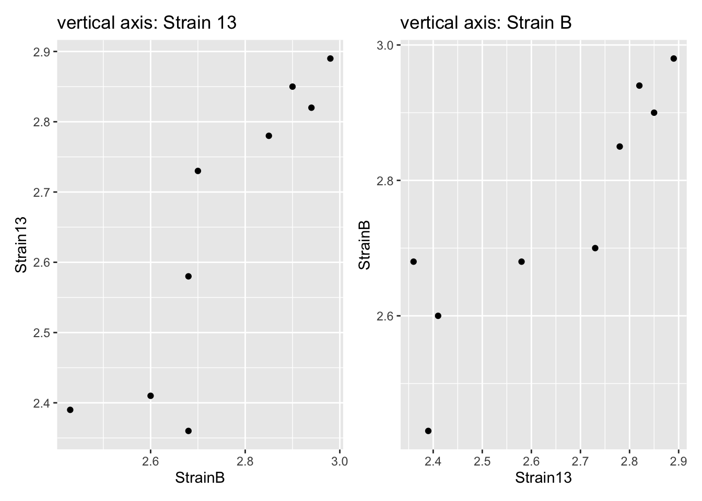

29 Wed Nov 18 - Correlation
29.2 Correlation
Correlation appears in Quinn and Keough in 6.1.7 Regression with random X. Correlation is not a general linear model and so it appears much later in Dr. Schneider’s notes under the unit of extensions of general linear models.
Correlation measures association between two randomly distributed variables.
The correlation coefficient is \(\rho\), which is estimated by the statistic \(r\), where \(r^2\) measures goodness of fit and explained variance.
29.3 Example
Sokal and Rohlf (2012 Box 13.12) reported data on litter size in two strains of Guinea pigs from the genetics lab of Sokal’s thesis supervisor, Sewall Wright. The data can be viewed as two time series. Do the two time series covary?
guinea.litter = read.csv("https://raw.githubusercontent.com/ahurford/biol-4605-data/refs/heads/main/data/guinea-litter.csv")
guinea.litter## StrainB Strain13 Year
## 1 2.68 2.36 1916
## 2 2.60 2.41 1917
## 3 2.43 2.39 1918
## 4 2.90 2.85 1919
## 5 2.94 2.82 1920
## 6 2.70 2.73 1921
## 7 2.68 2.58 1922
## 8 2.98 2.89 1923
## 9 2.85 2.78 192429.4 Comparison with regression
To understand correlation, it is useful to contrast with regression. In regression there is a hypothesized causal relationship and a clear choice of which variable in the explanatory and which the residual.
When we write the regression model, the residual term assumes no variation in the explanatory variable, and that errors are normally distributed and added to the expected value of the model, i.e.,
\[ y = E[Y] + \epsilon \]
where \(E[Y] = \alpha + \beta x\). For correlation, there is no clear choice of which variable is the response, and if we choose one variable as the response we then imply assumptions about residuals that are different than if we choose the other variable as the response.
Additionally, as suggested by the title of the the section on correlation in Quinn and Keough, when there is no clear choice of the response variable, then we also are likely to have measurement (or other errors) in the explanatory variable too. This section in Quinn and Keough is titled regression with random X, i.e., regression with measurement error in the explanatory varaible. This situation is called `correlation’. It is also called Type II regression. (Type I regression is what we have done for most of the class, and recall that Type III regression is when the order of the terms affects the partitioning of the sums of squares and is used to calculate the adjusted SS which is this partitioning when the specific explanatory variable to considered last).
From the preceeding discussion it should be clear, that we we cannot reasonably assign one variable to the x-axis (explanatory) and one to the y-axis (response variable), and that we also know that if we do a regression given an arbitrary choice of response variable, then we have made assumptions that differentiate our two variables even though we have no justification for treating our variables differently. Consider to alternative graphs for our guinea pig data:
require(ggplot2)
require(patchwork)
g1=ggplot(guinea.litter, aes(x=StrainB, y = Strain13))+geom_point()+ggtitle("vertical axis: Strain 13")
g2=ggplot(guinea.litter, aes(x=Strain13, y = StrainB))+geom_point()+ggtitle("vertical axis: Strain B")
g1+g2
We get different parameter estimates when we choose either variable as the response variable in the regression:
##
## Call:
## lm(formula = Strain13 ~ StrainB, data = guinea.litter)
##
## Coefficients:
## (Intercept) StrainB
## -0.2359 1.0474##
## Call:
## lm(formula = StrainB ~ Strain13, data = guinea.litter)
##
## Coefficients:
## (Intercept) Strain13
## 0.7809 0.7447Given the different assumptions of each regression it is not even true that the slope of the regressions are the reciprocal of each other, i.e., \(1/1.0474 = 0.9547\) and not \(0.7447\) (and visa versa and similarly for the intercept estimate).
To address these issues, the assumption of correlation is to center the normally distributed residuals around a principal component axis that splits the difference between the two different estimated regression slopes. See the diagram of this on the top of page 3 of Dr. Schneider’s notes.
29.5 Analysis
##
## Pearson's product-moment correlation
##
## data: guinea.litter$StrainB and guinea.litter$Strain13
## t = 4.9818, df = 7, p-value = 0.001598
## alternative hypothesis: true correlation is not equal to 0
## 95 percent confidence interval:
## 0.5297997 0.9752675
## sample estimates:
## cor
## 0.883175##
## Pearson's product-moment correlation
##
## data: guinea.litter$Strain13 and guinea.litter$StrainB
## t = 4.9818, df = 7, p-value = 0.001598
## alternative hypothesis: true correlation is not equal to 0
## 95 percent confidence interval:
## 0.5297997 0.9752675
## sample estimates:
## cor
## 0.883175The correlation coefficient, \(\hat{\rho} = 0.88\) is the geometric mean of the regressions which choose the different orderings: \(\sqrt{1.0474 \times 0.9547} = 0.883\). Additional formulae involving the angle between the regression slopes and the variance in either variable are provided in Dr. Schneider’s notes.
29.6 Formal model
In regression we have a randomly distributed response variable as a function of a fixed explanatory variable. In correlation we have two random response variables and no observed explanatory variable.
\[ [Y_1, Y_2] = T_{PC1} + \epsilon \]
where \(T_{PC1}\) is the principle compontent axis which is a straight line through the could of points. This is an implicitly defined function and it is not usual to write this equation in a scientific write-up (while such equations for general linear models are good practice). This is equation is provided in the course notes for your reference.
29.7 Hypothesis testing and evidence
The symbol \(\rho\) refers to the population estimate, while \(r = \hat{\rho}\) is the value estimated from the sample. The verbal hypothesis is that the litter sizes for strain B and strain 13 guinea pigs are related. The null hypothesis is writtern formally as:
\[ H_0: \rho = 0 \]
which verbally means that there is no relationship. We use the t-statistic to estiamte a p-value. The degrees of freedom are \(n-2\). The t-statistic is calculated as \(t = r/s_r\) where,
\[ s_r = \sqrt{\dfrac{1-r^2}{\mbox{df}}} = \sqrt{\dfrac{1-r^2}{n-2}} = \sqrt{\dfrac{1-0.883^2}{9-2}} = 0.117 \]
Therefore, \(t = 0.883 /0.177 = 4.97\) on 7 degrees of freedom.
## [1] 0.001619176where the multiplication by 2 is for the two-tailed test.
The likelihood ratio (which represents the evidence for the hypothesis) is calculated as:
\[ \mbox{LR} = (1-r^2)^{-n/2} = (1-0.883^2)^{-9/2} = 905 \]
29.8 Science conclusion
We conclude that the guinea pig litter sizes for strains 13 and B are correlated (\(\hat{\rho} = 0.883\), \(p = 0.0016\), LR = \(905\)). This supports our initial graphs which appear to show a linear relationship between the litter size for the two strains. It is usual to plot the two variables (and choose one for the vertical axis), however, if the appropriate statistical analysis is correlation rather than regression (for the reasons discussed at the start of this section) then it is necessary to perform the statistical analysis as outlined in this section.